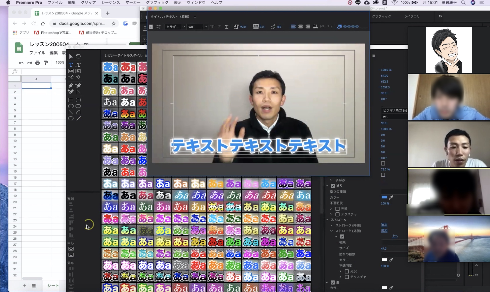

高瀬康平 Portfolio Site
プロフィール

パーソナル情報
高瀬 康平（たかせ こうへい）
1987年03月06日生まれ / 33歳
経歴
- ・現在転職活動中
-
・2018年4月~2020年3月 ： 介護事業（障がい者の生活支援及び農業）
「農業をツールに障がい者の支援をする」という点に惹かれ転職しました。
障がい者の生活支援、農業に伴う新規、既存営業、農作物の栽培、管理、出荷等を担当しました。
新規営業では月間新規受注件数は7件、成績トップを獲得しました。
新規営業、障がい者と接する上で心掛けていたのは、相手の思いを汲みとり、傾聴する姿勢です。
その甲斐あって、障がい者や、農業顧客との関係構築と新規受注件数の向上に繋がりました。 -
・2018年1月~2018年3月 ： 人材派遣業（介護職）
「自治体の介護職チャレンジ事業」の一環として、当時内定予定の介護施設に転職しました。
約3ヵ月職場研修中、約20人の利用者様の生活、身体介助、レクリエーション等を担当しました。
初めて会う利用者様、特に年配の方が多かった為、利用者様の話を親身になって聴く傾聴力に特に力を入れました。
研修最終日には「本当にありがとう」と泣く利用者様もいるほど信頼関係の構築ができました。 -
・2017年7月~2017年9月： 農業
「自然に寄り添った物づくりである農業で手に職を付けたい」と考え転職しました。
野菜（無農薬、無肥料、固定種、約24種類）の栽培、管理、約20顧客への出荷を担当しました。
朝6時から野菜の収穫、約10種類前後の野菜を出荷準備し、お客様が梱包された箱を開けて野菜を見たときの、野菜の向き、ボリューム感など、野菜の出荷準備を創意工夫しました。
そのおかげもあり、1件の新規顧客、お客様の笑顔獲得に繋がりました。 -
・2009年4月~2017年7月 ： 大手陸運業（東証一部）
「物がなくならない限り物流もなくならない」という言葉に魅力を感じ入社を決意しました。
約3年営業課：既存営業約30顧客の維持、拡大（オリジナル入金機の営業）を担当しました。
約5年半資金管理課：約100顧客の資金管理（顧客から預かる両替金の管理）を担当しました。
営業では、顧客の立場に立って考えること、定期的に顧客に足を運ぶなどの工夫をし、10店舗以上の新規顧客獲得を達成しました。
資金管理では、約100顧客の優先順位をつけ、計画を立て進行する事で、期日への提出完了を実現し、「高瀬さんにお任せしたい」と言われるまでに信頼獲得を得ることができました。 - ・2009年3月 ： 獨協大学 法学部 国際関係法学科 卒業
2020年に学習したプログラミングスキル
4月1日から現在まで毎日休まず継続して学習を続けています。
- 4月1日〜現在( 117 日) ： Ruby / Ruby on Rails
※成果物は下記参照ください
どの様な業務をしたいか
多くの人に価値提供できる画期的で便利なアプリの開発に携わりたいです。
その為に、必要な言語やスキルを取り入れていける環境で、業界知識をいち早く吸収し、積極的に行動することや、コミュニケーションを図るのはもちろんのこと、
常に学ぶ姿勢を忘れず、働いていきたいと考えております。
エンジニアを目指す理由
IT技術をツールとして、多くの人に価値提供していきたいからです。
きっかけは前職の経験です。私は農業や障がい者の方と、飛び込み営業、駅前でのチラシ配り、宣伝など非効率な業務を多く経験しました。
そんな時、同じ非効率性で悩む同部署のパン部門が試験的に3ヶ月ホームページを導入しました。
結果、パン部門は月間売上が対前年比約50%増加、人件費や広告費は約20%削減。市外のみならず県外からもお客様が訪れるなど、部署全体に喜びが広がり、私はIT技術による劇的な効率化を実体験し、大きく心が動かされ、IT業界、エンジニアに興味が湧きました。
その後、自分がプログラミング学習で妻に初めて作ったメモアプリを、妻が「いいね！これ！」と笑顔で喜んでくれた時に、IT業界、エンジニアへの興味が確信に変わりました。
今後は、新しい事に果敢に挑戦し、お客様の声を積極的に受け止め、課題点や改善点をご提案、実サービスに実装し、多くの人に価値提供できる様なエンジニアになりたいと考えております。
Ruby on Rails
やさいくメモ
制作アプリへのリンク

制作アプリの実行画面動画
アプリ概要
- ・やさいの料理をメモするアプリ
- ・料理を「やさい、内容、カテゴリ（色）」ごとに記載し、新規登録、編集、削除できる
- ・カテゴリ（色）選択できるため、選択したカテゴリ（色）のみ閲覧が可能
こだわりポイント
- ・初めてRailsでCRUD処理を実装して制作したアプリ
- ・AWS Cloud9でコンテンツ作成し、Herokuへデプロイ
- ・アプリ使用年齢層は、0歳～6歳の未就学児を子に持つ25歳～40歳の主婦の方々と想定し、可愛らしい画像を使用しました
- ・ストレスなく、楽しく見れるように、シンプルな文字表記で、カテゴリを「色」にしました
- ・妻に使ってもらって「いいね！これ！」と喜んでもらい、エンジニアへの興味が確信に変わりました
使用したGem
- ・bootstrap：レスポンシブデザイン、グリッドシステム
共同開発アプリ制作
共同開発で制作中のアプリイメージ

アプリ概要
- ・学習教材アプリ
- ・PM＋4人チームで共同開発で制作
こだわりポイント
- ・所属するオンラインサロンの講師がPMとなり、サロンメンバー４名と合同でアプリ開発
- ・trelloでタスク管理。挑戦したいタスクに参加し、完了したらタスクステータスを完了にする
- ・GitHubからCloneして、ローカル環境で作った機能をGitHubのリモートリポジトリへpushし、プルリクを送付。レビューして頂き問題無ければマージして頂く
- ・メンバーと相談してブラッシュアップ中
- ・現在作成中
個人サービス
オンライン
動画編集レッスン開催
講師をした動画編集レッスンの写真
レッスンで使用したサンプル動画
サービス概要
- ・初心者向けオンライン動画編集レッスンサービス（5名限定）
- ・①カット ②文字起こし ③テロップ ④画像素材 ⑤効果音、音量調整 ⑥BGM ⑦エフェクト ⑧色調補正 ⑨書き出し方法 ⑩YouTube限定公開 ⑪質問コーナー など基礎スキルをサポート
- ・5月初回限定無料：以降1人5千円でレッスン
- ・メイン講師の私と、サポート講師1名、運営サポート1名の合計3名で運営
- ・お客様希望によりマンツーマン対応も可能
- ・サービスは2020年5月1日よりS-in
こだわりポイント
- ・Web会議ツールZoomを活用。講師として3名にオンラインレッスンを開催
- ・運営サポート担当と協力し、Twitter、所属するオンラインサロン上で招待
- ・自ら内容、スケジュール企画し、運営サポート担当やサポート講師と調整
- ・2時間30分のレッスン、30分は質問タイム。活発に意見の交換を行う
- ・オンラインサロン動画編集チームで得た編集経験、 累計収入5万以上の実績を活かし、初心者の方を対象に、動画編集の最初のステップを価値提供しました
→個人サービスを企画し実行する力、新しい事に挑戦する力、マネジメント力、編集力があります。
出張マンツーマン
動画編集レッスン開催(関東)
講師をした
出張マンツーマン動画編集レッスン(関東)の写真
レッスンで使用したサンプル動画
サービス概要
- ・初心者向け出張マンツーマン動画編集レッスン(関東)サービス
- ・①カット ②文字起こし ③テロップ ④画像素材 ⑤効果音、音量調整 ⑥BGM ⑦エフェクト ⑧色調補正 ⑨書き出し方法 ⑩YouTube限定公開 ⑪質問コーナー など基礎スキルをサポート
- ・1名5千円でレッスン（累計収入2万）
- ・編集経験者かつメイン講師とマンツーマンでレッスン対応
- ・サービスは2020年3月1日よりS-in
こだわりポイント
- ・現地へ自ら出張し、累計4名に講師としてマンツーマン動画編集レッスン対応
- ・編集経験者から直接教えてもらえ、生の話が聞ける
- ・自ら内容、スケジュール企画し、運営調整する
- ・最初の10分アイスブレイク、2時間30分の動画編集レッスン、30分質問タイム
- ・オンラインサロン動画編集チームで得た編集経験、累計収入5万以上の実勢を活かし、初心者の方を対象に、動画編集の最初のステップを価値提供しました
→個人サービスを企画し実行する力、新しい事に挑戦する力、編集力があります
Other
自己紹介動画
自己紹介動画
"3分6秒で分かる高瀬 康平"
こだわりポイント
- ・3分6秒で自己紹介動画を作成
- ・自ら企画、台本、撮影、編集しました
- ・他者との差別化を図るためにYouTubeを使用して自己紹介しました
- ・挿入画像を挟む事で緩急をつけ、トピックごとに分かりやすくしました
- ・就職活動用の動画のため装飾は派手にせず、テロップ（字幕）はシンプルにして見やすくしました
→新しい事に挑戦する力、企画力、実行力、編集力があります。
オンライン
もくもく会主催
主催したオンラインもくもく会の写真
オンラインもくもく会の動画
こだわりポイント
- ・過去3回別のもくもく会に参加し、その後自らオンラインもくもく会を主催する
- ・所属するオンラインサロン上で呼びかけ、当日のスケジュール、内容の手配を行う
- ・2時間30分もくもく会、終了30分前に、報告、振り替り、質問。参加者通しで活発に意見の交換を行う
- ・コロナ状況下でも、勉強会を通じてメンバーの交流を深める
- ・第2回オンラインもくもく会を主催、定期的に主催予定
→物怖じしない性格、企画力、実行力、他者を巻き込み、人との交流を大切にするコミュニケーション力があります
もくもく会LT発表
LT発表の写真
もくもく会でLT発表した動画
こだわりポイント
- ・聞き手である参加者の方のためになるテーマを設定
- ・話を聞いて頂くけるよう発表で使うスライドはシンプルにしました
- ・「テーマ、自己紹介、結論、理由、具体例、まとめ」と分かりやすい構成を意識して企画
- ・使用したカラーは基本3色、目に優しい色に設定
→物怖じしない性格、企画力、実行力があります
Qiitaへ技術記事投稿
{kind=link}
こだわりポイント
- ・同じエラー内容でつまづいた方の参考になるように記事を作成
- ・AWS Cloud9でmysql2をいインストールする時のエラーを丁寧に解説
- ・今後も勉強した内容を積極的にアウトプットしていく
→新しい知識をインプットしアウトプットする事を常に意識しています
YouTube動画投稿
YouTube動画投稿画像
2019年6月〜2019年9月まで投稿したYouTube動画
【公開】素人がYouTube動画未編集で50本投稿してみた結果！！
- ・朝活について発信。自分自身が朝活歴の経験が長い事、当時朝活について発信する情報が薄かったため、朝活についてを紹介するチャンネルを作ろう！とスタート
- ・本業の繁忙期、動画撮影の過酷さが重なり一時休止中
→好奇心旺盛で、興味があったらまず実行してみる行動力、やりながら試行錯誤する思考力があります